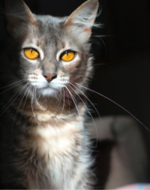
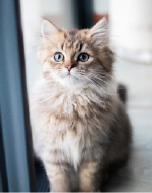
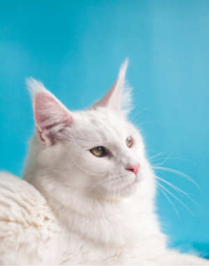
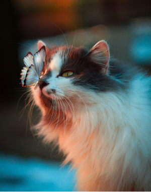

Cats spend 70% of their lives sleeping
If you thought cats spent a lot of their lives sleeping, you’d be
right. According to Veterinary Hub, Cats actually spend 70% of their
lives sleeping, which works out to around 13-16 hours a day. It’s a
cat’s life!

The record for the longest cat ever is 123 cm's
Domestic cats are usually considered to be quite small and dainty
creatures. But did you know the world’s longest cat was a Maine Coon
called Stewie, and was measured at 123 cm's? Whereas, the record for
the tallest cat belonged to Arcturus at a whopping 19.05 inches
tall! Those are some big cats.

House cats share 95.6% of their genetic makeup with tigers
This cat fact will really blow your mind. A study discovered that
our little house cats share 95.6% of their genetic makeup with
tigers! They also share a lot of the same behaviours such as scent
and urine marking, prey stalking and pouncing.

The record for the loudest purr is 67.8db
The record for the loudest purr by a domestic cat is currently held
by Merlin, a black and white cat from Torquay, UK. His purr is
67.8db and for context, this is nearly the same volume as a shower!
Most cats purr at around 25db.